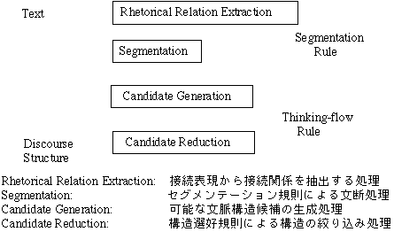

（５０）文脈構造抽出実験システム
マ シ ン：PSI-II
環 境：SIMPOS
言 語：ESP
ソース量：1.0 MB
文 書：なし
概要
計算機により複数の文からなる日本語文章の全体の構造を解析する実験システ
ム
構成

機能
文章を対象とした自然言語処理のためには、文脈構造の記述、解析のための言
語知識の整備が重要である。本システムでは、以下の言語的知識に基づいて、
木構造で表現した文脈構造を解析する。
- ・セグメンテーション規則
- 大局的な文のまとまりを明示する修辞的表現と、その表現によって規定さ
れる文脈構造に対する制約を表現。
- ・構造選好規則
- 局所的な構造の絞り込みのために、議論の展開を定式化し規則化。
参考文献
- Sumita, K., et al., "A Discourse Structure Analyzer for Japanese
Text", Proc. Int. Conf. Fifth Generation Computer Systems 1992.
ＦＴＰ
- 文脈構造抽出実験システム [345K]

www-admin@icot.or.jp